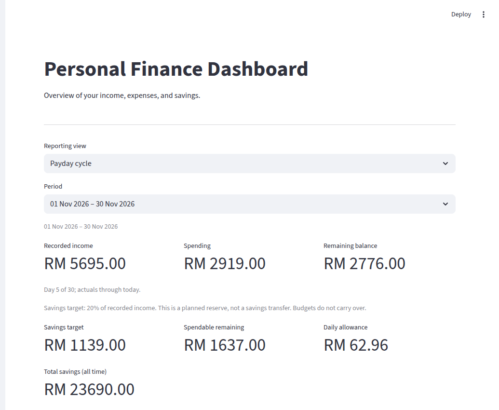
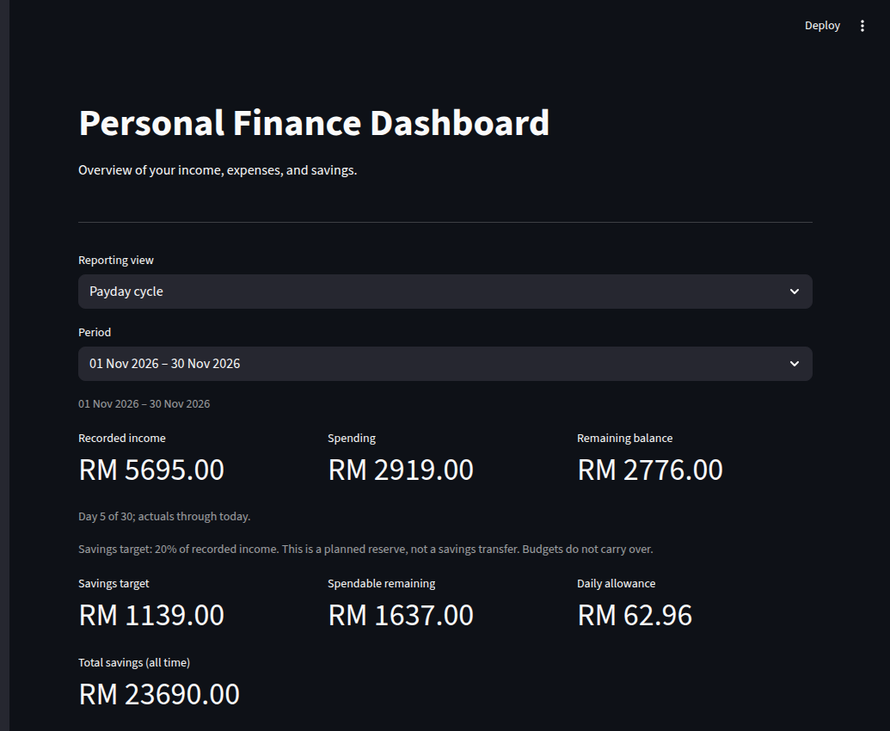

A personal finance tracking and analysis tool that helps you record income and expenses, compare spending periods, and plan around a payday cycle and savings target.


syFinance keeps income, expenses, and budget settings together in a local dashboard. See where your money goes and compare periods using clear calculations.
Your finance data stays with you instead of depending on a hosted service.
Metrics are designed to be understandable, not hidden behind black-box scoring.
Simple Python-based stack that is easy to inspect, modify, and extend.
Built to help with decisions, not just display charts and numbers.
Explore the app with fictional data spanning several months. Each view comes from the local app.
Designed for local use with Streamlit, making it suitable for personal or household finance tracking.
Track records, choose a reporting period, and compare spending against your savings plan.
Record income and expenses, organize spending by category and subcategory, and export records as CSV.
Set a payday cycle and savings target, then compare current spending with previous periods.
Review period income, spending, balance, category breakdowns, and trends in a local Streamlit dashboard.
From data entry to analysis, syFinance keeps the flow straightforward and transparent.
Financial records are stored locally using SQLite.
Income and expenses are organized into structured monthly views.
Charts and dashboard metrics make patterns easier to understand.
Savings-based analysis helps turn raw numbers into practical decisions.
A simple stack chosen for local usability, transparency, and easy maintenance.
syFinance is intended for local use. There is no hosted demo by design.
git clone https://github.com/AkaruiYami/syFinance cd syFinance pip install -r requirements.txt python -m streamlit run main.py
git clone https://github.com/AkaruiYami/syFinance cd syFinance uv sync uv run streamlit run main.py